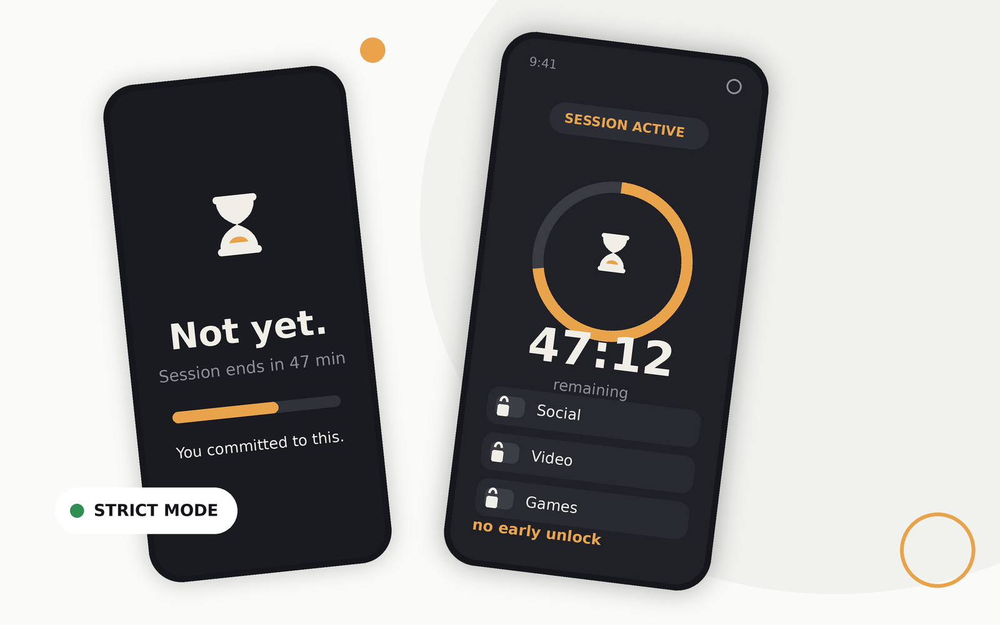

Choose
Pick the installed apps that pull you away — search, select, done. Protected apps (phone, launcher, settings) can’t be blocked by accident, and the list explains why.
Lockin turns a focus session into a promise your phone won’t let you break. Choose the apps that pull you away, choose a duration, and commit — from that moment until the deadline there is no cancel, no pause, no early unlock. When the timer completes, the lock releases by itself.

No accounts, no setup wizard marathon. You’re committing, not configuring.
Pick the installed apps that pull you away — search, select, done. Protected apps (phone, launcher, settings) can’t be blocked by accident, and the list explains why.
Presets from 15 minutes to 8 hours, or any custom time up to 7 days. The confirmation screen shows every detail — app count, duration, exact end time — then asks you to tick “I understand and I commit.”
Until the deadline, the block stands. The countdown notification only informs — it has no actions. When the timer reaches zero, Lockin completes the session and lets you back in, by itself.
Most focus tools keep a pause button in a drawer somewhere. Lockin deletes the concept: the session state machine has no early-exit transition to hide, because it has no early-exit transition at all.
Re-proven mechanically on every release by
scripts/verify_contract.sh — a green run is part of
the build, not a promise.
Time runs one way. So does the machine.
Drawn live from Lockin’s design system — the same tokens, geometry and colours as the app. (Device screenshots are still being captured honestly; none are faked here.)
Ready when
you are.
Not yet.
Session ends at 4:30 PM
You committed to this.
No streaks to farm, no feeds to scroll. Lockin is a commitment engine with a friendly face.
IDLE → PREPARING → ACTIVE → COMPLETED, enforced in
pure engine logic — not hidden buttons. The UI can only request
legal events.
The accessibility blocker listens to which app is in front of you — window-state events only. It never reads your screen content, text, or keystrokes.
Recurring focus windows that start themselves — deep work every weekday, study blocks in the evening, with next-run previews.
A dashboard that tells the truth: what’s on, what’s optional, and what a determined user could still disable. Device admin adds one real step before uninstall — we never claim more than that.
Process death, reboot, aggressive battery managers, clock jumps — sessions persist in SQLite and reconcile through alarms, boot receivers, and a 15-minute watchdog.
An original hourglass identity, one accent colour, generous type. Light and dark follow your system, and the countdown stays readable in both.
Not “we promise not to.” The INTERNET permission is not in the app’s manifest — network tracking isn’t against the rules, it’s physically unavailable. Everything lives in local SQLite on your device.
One universal APK for every supported phone. Verify the checksum, sideload it in a minute, and follow the two-minute first-run guide.
Requires Android 6.0 (API 23) or newer · SHA-256 published with every release · signed v1+v2
No — and that is the product. There is no cancel button, no notification action, no hidden gesture, and no shortcut. If you might need an escape hatch, Lockin is the wrong tool for that job; that’s exactly what makes it the right tool when you need a real commitment.
Yes. GPL-3.0 open source, no ads, no subscriptions, no accounts. The only download is the official APK from this repository’s releases — anywhere else, verify the SHA-256 first.
It blocks the launchable apps you select while a session is active. It never blocks itself, the phone/dialer, your launcher, the package installer, or SystemUI — emergency access always stays open, and the protection center explains each rule.
No. Detection uses accessibility window-state events: “which app became active”, nothing else. The service configuration has content retrieval disabled — no text, no keystrokes, no screen contents, and no network to send anything over anyway.
The session survives. Deadlines are persisted with both elapsed and wall time; boot receivers, exact alarms, and a 15-minute watchdog reconcile the state, and a clock change is corrected honestly instead of silently stretching your session.
Android 6.0 (API 23) through Android 16, with version-aware handling from notification channels to foreground-service types. The honest, test-by-test matrix lives in the repository’s compatibility document.